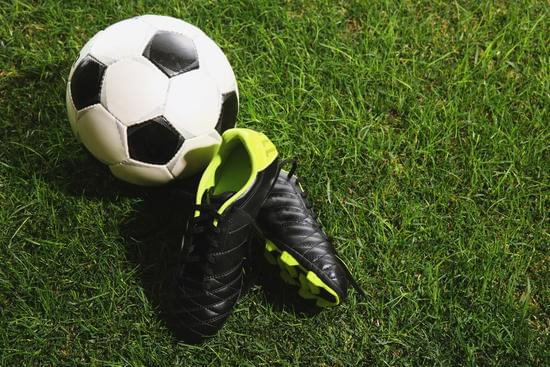
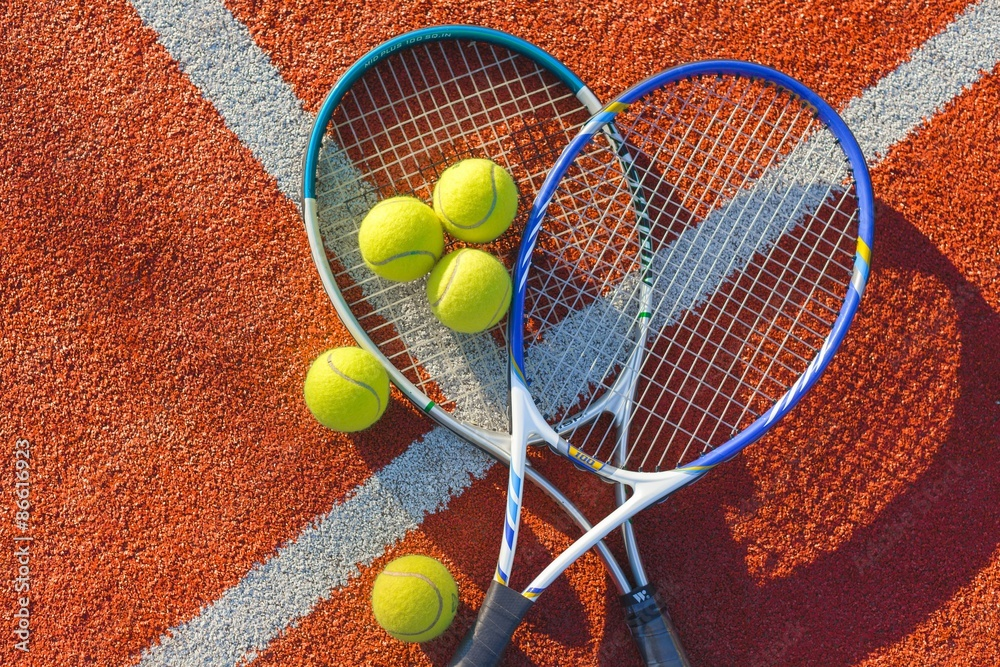

Le Mie Passioni

⚽ Calcio
Una delle mie più grandi passioni è il calcio, sport che pratico fin da quando avevo sei anni. Lo sport occupa una parte importante della mia vita perché insegna disciplina, impegno e lavoro di squadra.

🎾 Tennis
Oltre al calcio seguo anche il tennis e mi piace rimanere aggiornato sugli eventi sportivi più importanti.

🎵 Musica
Nel tempo libero ascolto musica, attività che considero un modo per rilassarmi e staccare dagli impegni quotidiani.